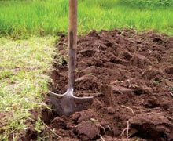
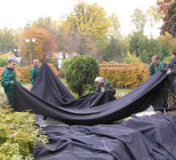
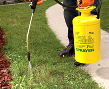
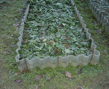

Можно ли заработать состояние на своем дачном участке?
Можно!
Я за один сезон на овощах купил дочке машину!
Всю жизнь проработал инженером, но никогда и за целый год не зарабатывал столько, как за один сезон на небольшом участке и в свое удовольствие! Делюсь своей радостью и небольшим секретом.
Я никогда в жизни не думал, что буду заниматься фермерскими делами. Более того, всегда смеялся над своими друзьями и родственниками, которые говорили, что им нравится ковыряться в земле. Но пару лет назад моя двоюродная тетя скончалась, оставив свой домик в деревне мне в наследство. Тогда же родилась младшая дочь, и я подумал, что у меня появилась отличная возможность выращивать биопродукты, чтобы кормить ребенка, да и всю семью натуральным.
Конечно, прежде чем приступить к возделыванию всех своих 20 соток, я прочитал кое-какую литературу. Однако это не помогло мне остаться вообще без урожая в первый сезон. А знаете почему? Сорняки!! Я никогда не думал, что это такая огромная проблема! Всегда думал – ну посадил, ну полил — и давай собирай урожай! Оказалось, все не так. И вместе с тем, что ты сам посадил, еще растет огромное количество растений-вредителей, от которых приходится избавляться.
Сначала я думал, ничего страшного, буду просто полоть. Ну подумаешь – вырвал эти лишние травинки и живешь себе дальше, бед не знаешь. Очень быстро стало ясно - не тут то было! Ты вырвал две – в ответ выросло четыре! И так далее. В конце концов, на твоих грядках и огурцов-то больше не видать! Зато лебеда, пырей да осот цветут и пахнут! Ни засуха их не берет, ни морозы с ливнями проливными! В тот сезон я, наконец понял, почему дачники всегда проводят целые дни на огороде, в характерной позе…
На следующий год я попытался использовать различные химикаты против сорняков. Однако то ли я что-то делал не так, то ли средства я покупал не те… Сорняки расти перестали, не спорю. Но вместе с ними перестали расти и мои овощи, погибли почти все посадки.
Тогда же я вспомнил про своего институтского приятеля. У него родственники известные огородники. Сколько себя помню, угощали дарами своего огорода. Позвонил ему, чтоб спросить совета. Его родители рассказали мне, что уже много лет используют одно средство, называется Биогард. Единственное, что его сложно найти в продаже, и если где-то появляется, они закупают сразу впрок. Я подумал, что хуже точно не станет, пошерстил интернет, нашел его даже с доставкой, купил.
Биогард продается в очень удобной таре – сразу с распрыскивателем. Поэтому справиться с его использованием может даже такой дилетант как я! Побрызгал я первый раз огород вечером и уже утром не мог поверить своим глазам! Мои огурчики да кабачки выглядели бодрыми и довольными, а вся сорнячная братия была повержена! Сначала поверить не мог! Ведь как же так – либо химикат убивает все, либо ничего! Ну как у меня, собственно, и случилось в прошлые попытики. Но тут он как будто разобрался – кто свой, кто чужой.
Как оказалось – так оно и есть! В составе Биогарда содержатся отдельные клетки, которые также содержатся во многих культурных растениях, поэтому для всех огородных культур он абсолютно безопасен. При этом для сорняков – губителен. Звучит как сказка? Я тоже не сразу поверил. Пока результат не увидел.
В тот же год, когда я использовал Биогард впервые, объемы урожая были просто неимоверные! Я сначала угощал всех своих знакомых, родных. Потом начал изучать рецепты заготовок – солил огурцы, мариновал помидоры, закатывал салаты. Но даже при этом всем урожай не заканчивался! Жена уже аж ругалась, мол видеть твои закатки больше не могу!
Как-то пришел ко мне сосед, говорит, продай мне корзинку огурцов – гости приезжают, на стол нечего поставить. Я подумал – а почему бы и нет! Через какое-то время пришла соседка – ты, говорит, излишки урожая продаешь? И понеслась! Соседи рассказали соседям, те рассказали знакомым. Ко мне начали приезжать из других поселков! И самое главное – на всех хватало! Потому что, как оказалось, если растениям не мешают расти сорняки, они и урожая дают раз в десять больше!
В тот сезон практически все мои соседи чего-то у меня купили – кто огурчик, кто помидор, а кто кабачок да зелень. В следующем я подумал – а почему бы мне не продавать свой урожай еще и на рынке? Получил место, оформил все бумаги. Овощи разлетались с бешеной скоростью - ведь все ценят чистые экологичные продукты, выращенные с любовью!
Всего за один сезон я смог заработать на машину в подарок старшей дочери, которая только-только получила права. А с женой и младшеньким на 2 недели в Турцию слетали на все включено!
И останавливаться я не планирую! В прошлом году ближайшие соседи уехали за границу, продав мне свой участок. Поэтому я планирую расширять ассортимент и увеличивать количество продаж! Уверен, что с моим рвением и желанием, а также при помощи Биогард, у меня получится и на дом мечты заработать, и в отпуск семью возить, сколько захочется.
Буду благодарен, если в комментариях расскажете, как вы боретесь с сорняками и какие необычные огородные культуры выращиваете. Всем урожая!
P.S. В комментариях и в личке множество вопросов, где я покупал Биогард. Оставляю прямую ссылку на сайт производителя ( там и цены без накрутки!) — заказывайте на здоровье!
Заказать БиогардБорьба с сорняками на огороде
Сразу нужно отметить, что не все растения, без разрешения заселившиеся на участок, подлежат истреблению. Присутствие небольшого количества сорняков необходимо. Они часто служат убежищем или едой полезных насекомых, при отмирании удобряют землю, рыхлят почву своими корешками.
Некоторые виды сорняков на огороде могут рассказать владельцу о кислотности почвы и подсказать, как улучшить землю. Культурные растения меньше болеют, если присутствуют рядом полезные сорняки в огороде. В больших же количествах сорная растительность будет не лекарством, а ядом. Как убрать сорняки с огорода и подготовить почву к посадке?
Как огород очистить от сорняков
 На участке выделяют место под компостную яму. Все растительные остатки складывают в одно место в течение всего лета, не допуская разбрасывания. Чтобы победить сорные растения, нужно знать их названия: сорняков в огороде станет меньше, если знать характер каждого.
Почву для посадки готовят с осени. Перекопка под зиму, без разбивания комков, способствует вымерзанию части корневищ. Весной перед посадкой почву еще раз перекапывают, выбирая все кусочки корневищ. Систематическая перекопка, прополка и рыхления — лучшие и самые экологически чистые средства от сорняков.
Борьба с сорняками на огороде агротехническими приемами
Наиболее уязвимы сорняки в стадии прорастания, в это время достаточно срезать их плоскорезом Фокина. Пропалывать почву перед посевом обязательно. Сорняки на огороде уничтожают с помощью простых мер. 
- Поливают почву горячей (до 90 оС) водой. Гибнут семена сорняков и ростки.
- Помогает мульчирование почвы опилками, торфом, щепой.
- Мульчируют спанбондом — нетканым материалом, пропускающим воздух и влагу. Использование укрывного материала предохраняет культурные растения от перегрева и переохлаждения, а сорную растительность лишает доступа света. Спанбонд — проверенное средство от сорняков на огороде. Не требует особых материальных затрат, экологически чистое, не трудоемкое.
- Высаживают на сильно засоренные участки картофель или тыкву.
Как уничтожить сорняки в огороде
 Борьба с сорняками на огороде при помощи гербицидов поможет избавиться от упорных многолетников. За лето проводят не больше 3 обработок, выбирая для проведения работы солнечные дни. После применения гербицида должно пройти не меньше 6 часов, прежде чем начнется дождь или ляжет туман.
Опрыскивая сорняки, нельзя допускать попадания препаратов на культурные растения. Для этого используют направляющий кожух при опрыскивании или наносят гербицид на сорняки при помощи кисточки. Инструкции к препаратам точно укажут, как вывести сорняки с огорода.
Рекомендуют такие средства, как:
- Раундал.
- Лонтрел.
- Торнадо.
- Ураган.
- Глисол.
Гербицид применяют на неосвоенных участках и при сильном распространении упорных сорняков: вьюнка полевого, пырея ползучего, осота, полыни, звездчатки. Эффект применения гербицидов длится пока не начнут всходить семена сорняков, поскольку на них препараты не действуют. Как уничтожить сорняки в огороде в этом случае? Обработку гербицидом повторяют.
Если близкое соседство с культурными растениями не позволяет повторить обработку гербицидом, то прибегают к проверенным огородным рецептам.
Как вывести сорняки с огорода
Вокруг грядки глубоко вкапывают шифер, чтобы защитить их от корневищ пырея и сныти. А как огород очистить от сорняков, если они и в междурядьях? Поможет обработка дорожек газовой горелкой или паяльной лампой. Используют так же технический фен, струя горячего воздуха высушивает сорняки не хуже, чем пламя газовой горелки.
Такими обязательными манипулящиями можно избавить огород от сорняков.
Я бы тоже с радостью купила овощи у такого приятного человека.
А вы вырастите лучше) Тем более, вон уже сколько всяких штучек для того, чтобы сделать этот процесс простым и понятным
Я Биогардом пользуюсь уже не один год. Точно могу сказать, что совершенно иначе начинаешь смотреть на дачные заботы. Раньше дача значила прополку. Теперь - это отдых и вкусные натуральные овощи и фрукты.
Больше похоже на сказки.
Нет, это не сказки. Действительно Биогард работает так, как здесь говорится.
Вот радуют люди, которые не пробовали, вообще не представляют, о чем говорят, но при этом все критикуют и отрицают! Вот как попробуешь, не сработает, тогда и пиши! А так грядку живьем поди никогда не видел! А туда же - сказки.
Согласна на 100 процентов! Это как и те, которые рассказывают, что дача - это тяжкий труд и никакого удовольствия. Если делать все с умом, использовать достижения современной науки и не заморачиваться по пустякам, дача превращается в источник свежего воздуха, отличного настроения и свежих овощей.
Все равно дача - это только для пенсионеров или увальней, которым чужд активный образ жизни! Нормальные люди лето проводят, крутя педали! Ну или хотя бы веслом размахивая. А не в грядках.
Между прочим, благодаря таким штучкам как Биогард, одно другому никак вообще не мешает) Я лично успеваю и урожай вырастить (конечно, не как герой, не в промышленных масштабах, чисто летом покушать) и потом покататься с этим урожаем по окрестностям (и не только) на велике, и недельку-две погрести веслами тоже время остается.
У меня огромные территории огорода, доставшиеся от бабушки. Но мысли о том, что надо стоять в определенной известной позе все лето меня пугают! Поэтому я ничего не сажаю. Боюсь, что скоро все зарастет бурьяном… Будет жаль. Надо попробовать этот Биогард. Может, и правда, смогу еще и зарабатывать. Потому что территории у меня огромные! Это вам не дача в 6 соток.
Пробуйте! Я заработала детям на квартиру!! Подарок на свадьбу. Это так приятно, удивлять родных хорошими делами и подарками! А с Биогард это все становится возможным!
Не верю.
Ну и не верьте. Продолжайте покупать переоцененные овощи из нитратов в супермаркетах. А мы, верующие, продолжим использовать Биогард и кушать экологически чистые овощи, и зарабатывать еще на них!
Отличное средство. И пользоваться легко. Мороки не много. Рекомендую.
У меня соседка все ходит рассказывает про Биогард. А я не верила. Думала, просто дурью мается. Надо попробовать.
Пробуйте!! Точно не пожалеете! Это полностью изменит ваше представление о дачном быте. Еще и знать не будете, куда девать время, а потом и урожай)
Урожай девать всегда есть куда - народ с радостью покупает био- и экопродукты.
Я тоже в этом году решил поставить палатку на рынке. Потому что слишком уж много урожая вырастает, когда сорняки его не бьют. Тем более, для пенсионеров у нас в районе все очень просто, не нужно множества бумаг. Может и я чего-нибудь детям смогу прикупить!